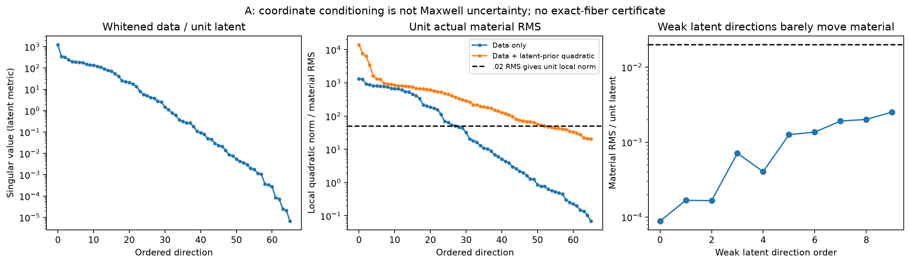

P1：真实弱方向仍在，但没有重要结构模式见证
2026-10-18 · 只用已付费缓存 · 新Maxwell/RHS/LU均0 · 无NN
四个直接结论
A的material-normalized局部弱方向不全是饱和伪影；原prior-aware三条方向在RMS .02有小先验代价，但尚无full-Maxwell验证或显著结构变化。
A和GT预测白化距离5.637，不能因为都过noise-ball就说不可区分。固定二均值的前瞻误判率约.241%，不是当前数据p值或posterior概率。
有限latent外推预测1212，完整材料一阶5.52，缓存真实差值5.64；此pair的主要失真来自decoder/坐标，不能把它全部叫高阶Maxwell feedback。
B原GN步被缩至约6.5%–11.2%；前8步模型下降比>.75。值得测试直接有界adaptive TR，尚不保证能收敛。
完整审计与证据边界 →新的实验仅冻结，不执行
12 / 288A拟议states / RHS16 / 640B拟议states / RHS900 s合计拟议物理wall0当前已授权新物理
A用material-native和强Full-J比较.02 finite-noise移动；B比较旧LM与adaptive TR。A17-X保留为独立current enrichment竞争机制，不借旧余额，不省略exact T-matrix/goal-ROM，不训练NN。
冻结协议、预算与停止 →坐标几何与原prior必须一起看

数值rank66不等于存在exact fiber；38个线性尺度方向或13个prior-aware二次方向不等于后验模式。